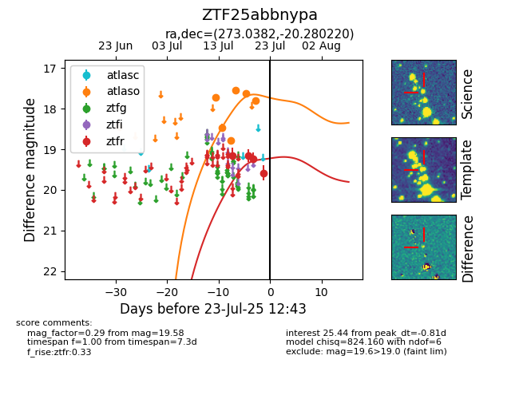

Target ZTF25abbnypa at 2025-07-23 12:43, see:
FINK: fink-portal.org/ZTF25abbnypa
Lasair: lasair-ztf.lsst.ac.uk/objects/ZTF25abbnypa
ALeRCE: alerce.online/object/ZTF25abbnypa
alt names
ZTF25abbnypa (ztf,fink)
coordinates:
equatorial (ra, dec) = (273.0382,-20.28022)
galactic (l, b) = (10.5062,-0.89673)
photometry
last atlaso=17.79, ztfr=19.58
7 atlaso, 4 ztfr detections
